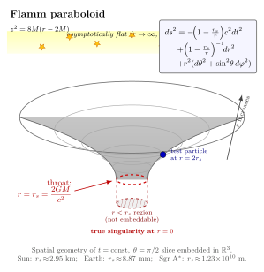

Schwarzschild 解 — 球对称真空里时空长什么样?
上一节我们写下了 Einstein 场方程 $G_{\mu\nu}+\Lambda g_{\mu\nu}=\frac{8\pi G}{c^4}T_{\mu\nu}$. 一行字, 但作为 $g_{\mu\nu}$ 的偏微分方程组, 它是 10 个耦合非线性二阶 PDE. 直接想 "解" 它在一般情况下是绝望的 — 1915 年时整个数学物理界对非线性 PDE 的处理工具远比今天稀薄. Einstein 自己当时也只敢做弱场展开, 以为没人能写出严格解. 然后 1916 年 1 月 13 日, 他收到一封从俄罗斯前线寄来的信 — 一位叫 Karl Schwarzschild 的天文学家, 在战壕里、患着自身免疫疾病、用炮兵观测员的余暇, 写出了静态球对称真空的精确解. Einstein 1 月 16 日代他在普鲁士科学院宣读. Schwarzschild 5 月 11 日因病在前线去世, 41 岁.
这一节我们要把那个解推一遍 — 不是因为它历史上重要 (虽然它的确是 GR 第一个非平凡精确解), 而是因为它建立了一个直觉: 给定一个对称性, 场方程就化简到几乎可以手算的程度; 而解出来的几何里, 凡是 Newton 引力告诉过我们的事情 (Newton 势 $\Phi=-GM/r$), 在 GR 这边都长出了一个对应物 (度规分量 $g_{tt}=-(1-r_s/r)$), 而且额外多出来一些 Newton 完全没有的东西 — 视界、史瓦西半径、奇点. 后面整整一卷的黑洞物理都是从这个解长出来的.
一、对称性把 10 个分量缩到 2 个未知函数
解非线性 PDE 的标准手法是: 用对称性把未知量切到最少, 让方程化简到能手算. 我们要的是静态 (度规分量不依赖于时间 $t$, 而且没有 $\mathrm dt\,\mathrm dx^i$ 交叉项 — 时间反演对称) 与球对称 (在每个 $r$ 球面上, 角度部分都是标准球面 $\mathrm d\Omega^2=\mathrm d\theta^2+\sin^2\theta\,\mathrm d\phi^2$) 的真空解. 把这两个条件用上, 度规最一般形式只剩两个未知函数 $A(r)$ 与 $B(r)$:
$$ \mathrm ds^2 \;=\; -A(r)\,c^2\,\mathrm dt^2 \;+\; B(r)\,\mathrm dr^2 \;+\; r^2\,(\mathrm d\theta^2 + \sin^2\theta\,\mathrm d\phi^2). $$
注意角向已经是 $r^2\,\mathrm d\Omega^2$ — 这其实是一个对 $r$ 坐标的定义性约定: 我们用"半径 $r$ 的球面面积是 $4\pi r^2$"来定义 $r$. 这不是几何上"到中心的距离", 而是一个面积坐标 (areal coordinate). 这件事到了视界附近会变得微妙 — 我们后面会看到.
余下的两个函数 $A(r)$, $B(r)$ 由真空场方程决定. 真空意味着 $T_{\mu\nu}=0$ (我们在球外面解, 不管球内有什么), 因此 $G_{\mu\nu}=0$, 等价地 $R_{\mu\nu}=0$ (在 4 维取 $\Lambda=0$, 缩并 $G_{\mu\nu}=0$ 给 $R=0$, 代回得 $R_{\mu\nu}=0$). 把 Christoffel、Ricci 全部代进去, 得到的独立方程只有两条 (其它分量自动满足或线性相关):
$$ \frac{B'}{B^2 r} + \frac{1}{r^2}\Big(1-\frac{1}{B}\Big) = 0,\qquad \frac{A'}{AB r} - \frac{1}{r^2}\Big(1-\frac{1}{B}\Big) = 0. $$
(撇号是 $\mathrm d/\mathrm dr$.) 把两条相加得到 $\dfrac{A'}{A}+\dfrac{B'}{B}=0$, 即 $\ln(AB)=\text{const}$. 用渐近平直 ($r\to\infty$ 时回到 Minkowski, $A,B\to 1$) 钉死那个常数, 得到
$$ A(r)\,B(r) \;=\; 1. $$
把 $B=1/A$ 代回上面任一条方程, 得到一阶 ODE
$$ (rA)' \;=\; 1, $$
积分给 $rA(r)=r-C$, 即 $A(r)=1-C/r$, $C$ 是积分常数. 渐近 $A\to 1$ 已自动满足. 剩下要做的, 是把 $C$ 与物理量 (源的质量) 接上.
二、Newton 极限定 $C=r_s=2GM/c^2$
积分常数 $C$ 不能由场方程本身定 — 真空方程不知道源在哪儿、多少质量. 我们要靠一个边界条件: 远场处, 这个度规必须回到 Newton 引力给出的弱场度规. 上一节我们已经看过, 弱场静态下 $g_{00}\approx -(1+2\Phi/c^2)$, $\Phi=-GM/r$ 是 Newton 势. 现在我们的解给出的 $g_{tt}=-A(r)c^2=-(1-C/r)c^2$, 即
$$ g_{00} = -\Big(1-\frac{C}{r}\Big),\qquad \text{要求 } -\Big(1-\frac{C}{r}\Big) \approx -\Big(1+\frac{2\Phi}{c^2}\Big) = -\Big(1-\frac{2GM}{rc^2}\Big). $$
对照得到 $C=2GM/c^2$. 这个量有自己的名字, 叫史瓦西半径 $r_s$:
$$ r_s \;=\; \frac{2GM}{c^2}. \tag{1} $$
把它代回, 我们就得到大名鼎鼎的 Schwarzschild 度规:
$$ \boxed{\;\mathrm ds^2 = -\Big(1-\frac{r_s}{r}\Big)c^2\,\mathrm dt^2 + \Big(1-\frac{r_s}{r}\Big)^{-1}\mathrm dr^2 + r^2\,(\mathrm d\theta^2+\sin^2\theta\,\mathrm d\phi^2).\;} \tag{2} $$
Schwarzschild 1916 年 1 月寄给 Einstein 的就是这个. 几个性质值得当场点出来:
- 渐近平直: $r\to\infty$ 时 $r_s/r\to 0$, 度规退化到 Minkowski $\mathrm ds^2=-c^2\mathrm dt^2+\mathrm dr^2+r^2\mathrm d\Omega^2$ (球坐标下的平直时空).
- $r=r_s$ 处坐标奇异: 度规 $g_{tt}\to 0$, $g_{rr}\to\infty$. 这看上去像奇点, 但 $r_s$ 处的曲率不变量 (例如 Kretschmann 标量 $R_{\mu\nu\rho\sigma}R^{\mu\nu\rho\sigma}=12 r_s^2/r^6$) 是有限的 $12/r_s^4$. 这只是坐标系坏掉了, 不是几何奇异.
- $r=0$ 处真奇点: Kretschmann 标量发散 ($\sim 1/r^6$), 这是几何上不可消除的奇点 — 任何坐标系都救不了它.
- $r\lt r_s$ 内部: $g_{tt}$ 与 $g_{rr}$ 换号. $r$ 与 $t$ 角色互换, $r$ 变成类时坐标. 进入视界后, "向 $r=0$" 不再是空间方向, 而是时间方向 — 你无法不前往奇点, 与你无法不经历未来一样.
第三、第四点是 Schwarzschild 解最不平凡的内容, 1960 年 Kruskal 与 Szekeres 用最大延拓坐标系把内外两区粘起来时才完整阐明. 但所有这些后续故事的种子, 都在 1916 年 1 月那封信里了.
三、Schwarzschild 几何长什么样: Flamm 嵌入
把上面的几何画出来不是件容易事 — 我们的脑袋习惯三维欧氏空间, 不擅长想"弯曲的四维洛伦兹时空". 一个传统的折中: 取 $t=\text{const}$ (一个时间切片) 与 $\theta=\pi/2$ (赤道面), 得到一个二维空间, 它的度规是
$$ \mathrm ds^2_{(2)} = \frac{\mathrm dr^2}{1-r_s/r} + r^2\,\mathrm d\phi^2. $$
这个二维曲面有内禀曲率 — 它不能"放平"在欧氏平面上. 但我们可以把它当成一个嵌入曲面 (embedded surface), 塞进一个虚构的 3 维欧氏空间 $\mathbb R^3$ 里, 它在 $\mathbb R^3$ 里的形状就是大名鼎鼎的 Flamm 抛物面 (Ludwig Flamm 1916 年的工作, 与 Schwarzschild 同年):
$$ z(r) \;=\; 2\sqrt{r_s\,(r-r_s)},\qquad r\ge r_s. $$
(平方一下就是 $z^2=4r_s(r-r_s)$, 几何单位 $G=c=1$ 下 $2M=r_s$, 写成 $z^2=8M(r-2M)$ 也是同一回事.) 这是一个开口朝外的抛物面, 像一个无限延伸的漏斗. 远区 $r\gg r_s$ 时 $z\sim\sqrt r$ 平展开来, 几何接近平面 — 这就是 "asymptotically flat". 漏斗的喉部正好在 $r=r_s$, 即视界处.

这张图传达了三件事. 一是远区平直 (上方平面)、近区被质量"凹"出一个井; 二是井的边缘有一个特殊位置 $r=r_s$, 它是视界 — 任何掉进去的东西都出不来; 三是嵌入图只画到 $r\ge r_s$, 因为 $r\lt r_s$ 的"内部"在这种切片图里没办法继续画下去 — 你需要别的坐标系 (Kruskal、Eddington-Finkelstein) 才能把内部几何也画进同一张图. 警告: Flamm 抛物面只是空间的 嵌入图, 不是时空的; 真正描述黑洞物理 (掉进去会发生什么) 需要时空图, 那是另一个故事 (后面第 16-18 节会讲).
四、把数字代进去: 太阳、地球、Sgr A*
(1) 不只是个公式 — 它给我们一个具体的长度尺度. 代几个常见的天体看看:
太阳. $M_\odot=1.989\times 10^{30}$ kg. 用 $G=6.674\times 10^{-11}\,\mathrm{m^3\,kg^{-1}\,s^{-2}}$, $c=2.998\times 10^8$ m/s, $c^2=8.988\times 10^{16}\,\mathrm{m^2/s^2}$:
$$ r_{s,\odot} = \frac{2\times 6.674\times 10^{-11}\times 1.989\times 10^{30}}{8.988\times 10^{16}} \;\approx\; 2.953\,\mathrm{km}. $$
太阳的物理半径 $R_\odot=6.957\times 10^5$ km. 比值 $r_{s,\odot}/R_\odot\approx 4.24\times 10^{-6}$. 史瓦西半径远远埋在太阳内部 — Schwarzschild 真空解只在 $r\ge R_\odot$ 那部分成立 (太阳内部不是真空, 要解内部 Schwarzschild, 与流体方程联立). 太阳不是黑洞: 要它变成黑洞, 你得把它的全部质量压到 3 km 之内 — 比一座中等城市还小.
地球. $M_\oplus=5.972\times 10^{24}$ kg.
$$ r_{s,\oplus} = \frac{2\times 6.674\times 10^{-11}\times 5.972\times 10^{24}}{8.988\times 10^{16}} \;\approx\; 8.87\,\mathrm{mm}. $$
地球的史瓦西半径不到 9 毫米 — 一颗樱桃大小. 地球若被压缩到这个尺度才会塌成黑洞, 显然完全不可能在自然界里发生. 这个数字常被用来举例说明引力的"弱": 一颗行星全部能量, 要把它压塌成黑洞所需的能量密度, 远超自然过程能企及的尺度.
Sgr A* (银河中心超大质量黑洞). $M_{\rm SgrA*}=4.154\times 10^6\,M_\odot$ (2022 EHT 合作最新测量). 这个就直接是黑洞了, 物理半径就是史瓦西半径量级:
$$ r_{s,\rm SgrA*} = \frac{2GM}{c^2} = 4.154\times 10^6 \times 2.953\,\mathrm{km} \;\approx\; 1.227\times 10^{10}\,\mathrm{m} \;\approx\; 1.23\times 10^7\,\mathrm{km}\;\approx\; 17.6\,R_\odot. $$
大约 18 个太阳半径. 地球距太阳 1 AU $\approx 1.496\times 10^8$ km, 所以 Sgr A* 的视界刚好放在水星轨道附近 (水星 $a=5.79\times 10^7$ km). EHT 在 2022 年发表的 Sgr A* 阴影图像角直径约 $52\,\mu\mathrm{as}$, 据距离 $D=8.277$ kpc 推得阴影几何半径 $\approx 6.3\times 10^{10}$ m, 与 GR 预测的 $5.2\,r_s$ 阴影 (考虑光线绕飞效应, Bardeen 1973) 一致. 这是 (1) 的直接观测验证, 距 Schwarzschild 1916 年写下它已经 106 年.
五、Birkhoff 定理与 Schwarzschild 解的"唯一性"
1923 年, George D. Birkhoff 证明了一个比 Schwarzschild 1916 年原结论强得多的结果: 球对称真空解必然是 Schwarzschild 解 — 而且必然静态. 即使你假设源是球对称地脉动 (径向涨缩) 的, 它外面的真空时空依然是不变的 Schwarzschild 解. 球对称地脉动的物质不辐射引力波, 这与电磁学中"球对称地脉动的电荷不辐射"完全平行 (单极辐射禁戒).
这个结果 (Birkhoff 定理) 有一个深刻的物理后果: 第 14 节我们要找的引力波, 不可能来自球对称源 — 它们必须有四极矩或更高极矩的不对称性 (双星互绕、超新星非对称塌缩、双黑洞合并). LIGO 第一次探测到的 GW150914 是一对约 30 太阳质量的黑洞合并 — 完全非球对称, 所以辐射出 $\sim 3\,M_\odot c^2$ 的能量以引力波带走.
Birkhoff 定理还告诉我们: 任何球对称恒星 (太阳、白矮星、未塌缩到 $r_s$ 内的中子星) 外部, 都精确是 Schwarzschild 度规, 与内部细节 (密度分布、转动、内部状态方程) 完全无关 — 只与总质量 $M$ 有关. 这就是为什么 Schwarzschild 解 1916 年一寄出就同时描述了"任何球对称恒星外的时空", 不论它是太阳还是中子星. 这种"外部度规由几个参数完全决定"的特性, 在更一般的情形下 (容许旋转、电荷) 演变成了 1960s-70s 的"无毛定理" (no-hair theorem, Israel-Carter-Hawking-Robinson): 黑洞外部度规由 $(M, J, Q)$ 三个数完全决定, 内部所有信息被视界吞掉.
六、史瓦西轶事与解的延拓简史
Karl Schwarzschild 1873 年生于法兰克福, 1900 年起任 Göttingen 天文台台长, 1909 年接 Hermann von Helmholtz 留下的 Potsdam 天体物理台台长. 1914 年一战爆发, 41 岁的他志愿入伍, 先在比利时, 后调至俄罗斯前线做炮兵观测员 (用他的天文测量本领算炮弹弹道). 战壕生活让他染上罕见的自身免疫皮肤病 pemphigus. 1915 年 12 月, 在前线收到 Einstein 11 月 25 日讲稿 ("Die Feldgleichungen der Gravitation") 的 Schwarzschild, 在病榻上做了三件事: (i) 写出球对称真空解; (ii) 写出球对称内部解 (一个均匀密度球内的解); (iii) 推导 Mercury 进动 (结果与 Einstein 的近似计算一致到几位数). 三篇论文 1916 年 1 月、2 月、5 月先后发表. 5 月 11 日 Schwarzschild 在前线去世.
Einstein 在普鲁士科学院致辞悼念他, 说"他成果之精华——他用最简单的手段, 在一个领域里得到迄今最深远的结果——这正是真正天才的标志". Eddington 后来评论: "Schwarzschild 在战壕里花两个月做完的事, 比许多人在和平的二十年里做的还多."
1916 年这个解被写下后, 数学家们花了 50 年才完全理解它. 1924 年 Eddington 在 The Mathematical Theory of Relativity 里指出 $r=r_s$ 不是真奇点 (可以靠坐标变换消掉), 但当时没引起重视; 1933 年 Lemaître 写了一个不同的坐标 (Lemaître 坐标) 看到内部; 1958 年 Finkelstein 发表 Eddington-Finkelstein 坐标, 让"穿过视界落进黑洞"在度规上变得明显; 1960 年 Kruskal 与 Szekeres 独立发表了最大延拓坐标系, 把整个 Schwarzschild 时空 (包括白洞、第二个渐近平直区) 画进了同一张图. 1965 年 Penrose 引入共形 (Penrose) 图, 把它压成可读的形式. "Schwarzschild 解的全部几何"是 1916 年写下、1965 年才完整理解的一段历史.
七、向后看: 这个解是黑洞物理的种子
(2) 这一行度规, 是后面这一卷 (尤其是黑洞那部分) 几乎所有故事的起点:
- 第 13 节: 它退化到 Newton 引力的展开 — 也是上一节我们用过的 $g_{00}\approx -(1+2\Phi/c^2)$ 的具体例子.
- 第 14 节: 用 Birkhoff 定理论证球对称源不辐射引力波, 落到 Hulse-Taylor 双脉冲星与 LIGO 信号.
- 第 16-18 节: Kruskal 延拓、视界几何、Hawking 辐射 — 全部以 Schwarzschild 为底, 加上量子场论或推广到 Kerr.
- 第 19 节: Kerr 解 (1963) 是带角动量的推广. 解的形式比 Schwarzschild 复杂得多, 但远场行为与 Schwarzschild 在 $a\to 0$ 极限连续.
- 第 20 节: M87* 与 Sgr A* 的事件视界望远镜照片, 阴影直径精确给出 $\sim 5.2\,r_s$ — 把 (1) 的预测变成了一张照片.
所有这些都建立在 1916 年 1 月那两页论文上. 一封从前线寄回的信, 半个世纪后变成了天文学上的一类天体 (黑洞), 又一个世纪后变成了望远镜阵列的一张图像.
小结
这一节我们解出了 Einstein 场方程的第一个非平凡精确解 — Schwarzschild 1916 度规. 路径短得令人不敢相信: 写下静态球对称度规, 把真空 $R_{\mu\nu}=0$ 拆成两条 ODE, 几行代数得到 $A(r)=1-r_s/r$, $B(r)=1/A$, 用 Newton 极限把积分常数钉死成 $r_s=2GM/c^2$. 这就是 (1) 与 (2). 数字: 太阳 $r_s\approx 2.95$ km (远在太阳半径之内, 太阳不是黑洞), 地球 $r_s\approx 8.87$ mm, Sgr A* $r_s\approx 1.23\times 10^{10}$ m (约 18 个太阳半径). 解里 $r=r_s$ 是视界 (坐标奇异, 不是几何奇异), $r=0$ 是真奇点. Birkhoff 1923 把它升级为唯一性定理: 球对称真空必为 Schwarzschild 解, 还必然静态, 因而单极/球对称源不辐射引力波. 整个黑洞物理后面的几节, 都是 (2) 的延拓与推广 — Kerr、Hawking、EHT 阴影一脉相承.
▲